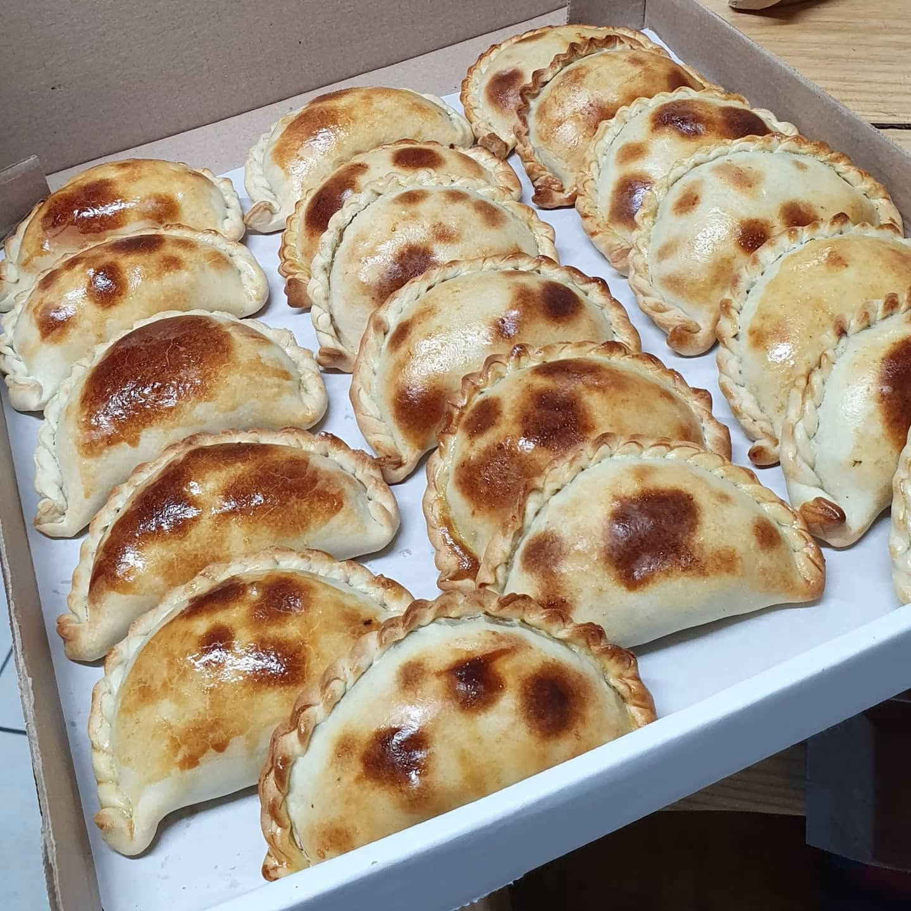
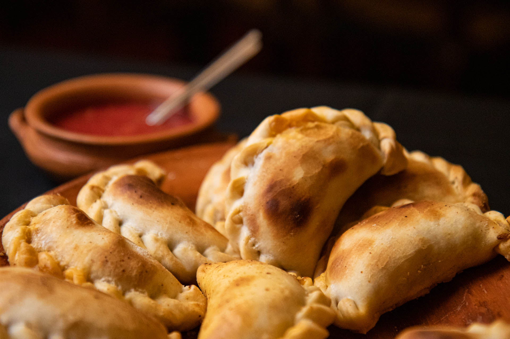
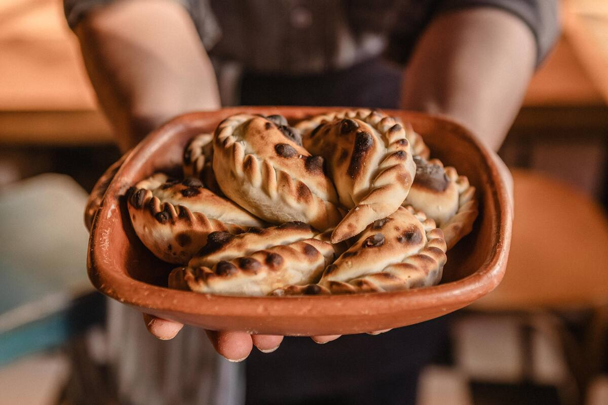

Para tu negocio
Somos tus proveedores directos y continuos de empanadas al horno, listas para consumir. Una solución práctica y deliciosa para tu negocio.
Empanadas al horno de barro recién horneadas sobre tabla de madera oscura, en El Progreso, Buenos Aires.
Proveedores y restaurante · Buenos Aires
Disfrutá la auténtica empanada al horno de barro, hecha a mano y con ingredientes frescos. Un sabor que celebra la identidad argentina.
Para tu negocio
Somos tus proveedores directos y continuos de empanadas al horno, listas para consumir. Una solución práctica y deliciosa para tu negocio.
Para disfrutar en casa
En pleno centro de Buenos Aires elaboramos empanadas artesanales al horno de barro con recetas tradicionales, para un almuerzo casual, una cena especial o una reunión con amigos.

Unidad de negocio B2B · Proveedores
En Empanadas El Progreso llevamos a tu mesa la esencia de nuestro restaurante. Somos proveedores directos y continuos de empanadas artesanales al horno de barro, listas para consumir. Ofrecemos una solución práctica, rentable y deliciosa para tu comercio, con la misma calidad e ingredientes frescos que nos distinguen en El Progreso Restaurante.
“Convertite en proveedor de El Progreso. Contactanos para conocer precios mayoristas y disponibilidad.”
Precios mayoristas · 4372-3350Unidad de negocio B2C · Consumidor final
Nuestras empanadas son grandes, jugosas y están diseñadas para satisfacer todos los gustos.

Un homenaje a los sabores tradicionales.
Combinaciones únicas para paladares curiosos.

Recetas exclusivas con ingredientes de primera calidad.
Empanadas salteñas en CABA y empanadas al horno de barro: consultá disponibilidad por gusto.
Promoción especial · Precio docena de empanadas
Ideal para reuniones, familias y pedidos grandes.
Reservar la promoción · 4372-3350Proveedores de empanadas para comercios y puntos de venta de todo tipo.
Podés retirar tu pedido o solicitar envío a domicilio. ¡Pedí tus empanadas ahora! Hacé tu pedido por teléfono o visitanos en Sarmiento 1334.
Horarios y ubicación

Convertite en proveedor de El Progreso. Contactanos para conocer precios mayoristas y disponibilidad al teléfono 4372-3350.
Carne, Pollo, Capresse, Humita, Jamón y Queso, Verdura y Salsa Blanca, y Queso y Cebolla.
3 docenas de empanadas clásicas por $ AR 49.000.-, ideal para reuniones, familias y pedidos grandes. También consultá por la docena de empanadas al mejor precio, con gustos a elección.
Sí. Podés retirar tu pedido en el local o solicitar envío a domicilio. Pedidos e informes: 4372-3350.
Abierto todos los días: lunes a viernes, sábados, domingos y feriados, de 8:00 hs. a 23:00 hs., en Sarmiento 1334, Ciudad de Buenos Aires.